2. Felhasználói felület
2.1 Főoldal funkciói
Az alkalmazás főoldala a felhasználók első találkozási pontja a rendszerrel, ezért kialakítása modern, letisztult és átlátható megjelenést biztosít. A képernyő tetején található fix navigációs menü segítségével a felhasználók gyorsan és egyszerűen elérhetik a legfontosabb funkciókat, mint például az Árfolyamfigyelő, Hírek, Portfóliókezelés, EdgeAI, Fórum, valamint a személyes fiókkezelés lehetőségeit. A menüpontok egyértelmű elrendezése megkönnyíti az eligazodást, a jobb felső sarokban elhelyezett "Fiókom" és "Belépés" gombok pedig a regisztrált és új felhasználók számára is könnyen elérhetők.
A főoldal központi tartalmi részében egy figyelemfelkeltő marketingüzenet jelenik meg, amely cselekvésre ösztönzi a látogatót: „Csatlakozz hozzánk! – Piacok mozgásban, profit a célkeresztben! Mesterséges Intelligencia ajánlásokkal!”. Ezt egy kiemelt piros színű gomb követi „Vágj bele!” felirattal, amely közvetlenül a regisztrációs vagy belépési folyamat elindítását segíti. A gomb megnyomása után a rendszer automatikusan átirányítja a felhasználót a megfelelő oldalra, így biztosítva a gyors és gördülékeny belépést. A főoldalon elhelyezett vizuális elem, egy dinamikus grafikon, a piacok mozgását és a rendszer pénzügyi jellegét szimbolizálja, tovább erősítve a platform célját és hangulatát.Az oldal alsó részén található láblécben hasznos és fontos információs linkek kaptak helyet. Itt érhető el többek között az Általános Szerződési Feltételek (ÁSZF), az Adatvédelmi Tájékoztató, a Rólunk oldal, valamint a Hírlevél és Súgó menüpontok. Ezek a hivatkozások biztosítják a felhasználók számára a rendszerrel kapcsolatos átláthatóságot és a jogi feltételek könnyű elérését. A főoldal felépítése egységes, felhasználóbarát élményt nyújt, amely elősegíti a rendszer funkcióinak gyors megismerését és támogatja a hatékony felhasználói navigációt.
Az alábbiakban megtalálható egy felhasználói prototípus és egy use case diagram a funkcióról.
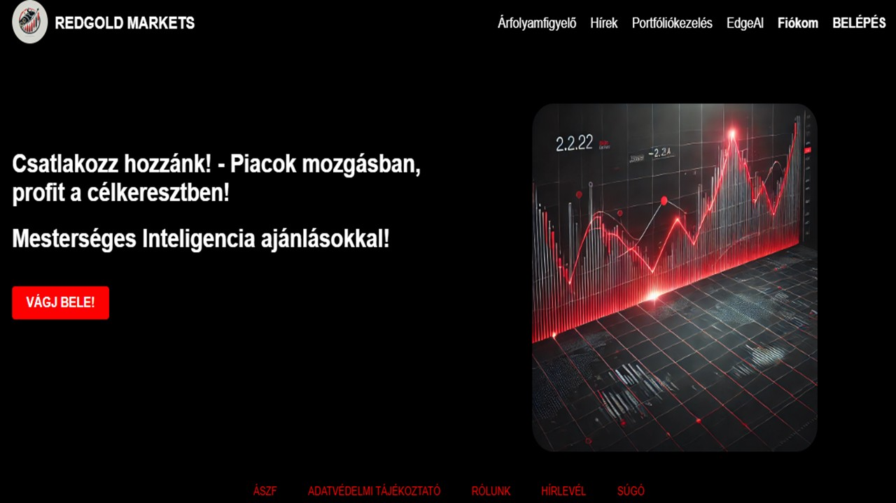
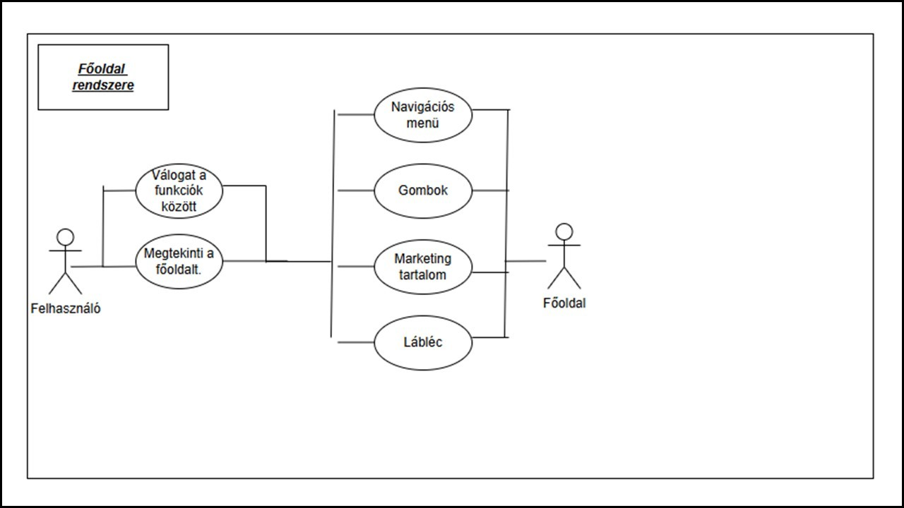
2.2 Árfolyamfigyelő
Az Árfolyamfigyelő funkció a tőzsdei webalkalmazás egyik legfontosabb alapszolgáltatása, amely a felhasználók számára valós idejű piaci információkat biztosít egy könnyen áttekinthető, táblázatos felületen. A táblázatban a legnépszerűbb részvények, például az Apple Inc. (AAPL), Tesla Inc. (TSLA), Microsoft Corp. (MSFT), Amazon Inc. (AMZN) és az Alphabet Inc. (GOOGL) szerepelnek. A megjelenített adatok között megtalálható a részvény neve, aktuális árfolyama HUF-ban, napi változásának százalékos értéke, valamint a kereskedési lehetőségek. A piaci adatok rendszeresen frissülnek, így biztosítva a folyamatos és pontos információáramlást a befektetők számára.A táblázat minden sorában elérhető a Vásárlás és Eladás gomb, amelyek lehetőséget biztosítanak az azonnali tranzakciók végrehajtására. A Vásárlás gomb zöld színnel jelenik meg, amely a vételi szándékot jelöli, míg az Eladás gomb piros színben figyelmeztet a részvény eladásának lehetőségére. Ezek a gombok közvetlenül a táblázatból elérhetők, így a felhasználók egyszerűen és gyorsan hajthatják végre a kívánt műveleteket. Az oldal alján található frissítési időpont tájékoztatja a felhasználót az adatok legutóbbi frissítéséről, ezzel növelve a rendszer megbízhatóságát és átláthatóságát.
Az Árfolyamfigyelő funkciót további kiegészítő lehetőségek teszik még hatékonyabbá és felhasználóbaráttá. A rendszer lehetőséget biztosít a részvények részletes adatainak megtekintésére, ahol a felhasználó többek között megismerheti a napi forgalmat, a piaci kapitalizációt vagy az éves osztalékadatokat. Emellett a felhasználók személyre szabott árfolyamriasztásokat is beállíthatnak, amelyek automatikusan értesítést küldenek, ha a részvény ára eléri a megadott értékhatárokat. A funkció egy grafikon megjelenítésére is alkalmas, amely vizuálisan szemlélteti a részvény árfolyamának múltbeli alakulását, segítve ezzel a befektetési döntések megalapozását. Az Árfolyamfigyelő felülete így átlátható, interaktív és támogatja a felhasználók gyors, hatékony és megalapozott döntéshozatalát a tőzsdei kereskedés során.
Az alábbiakban megtalálható egy felhasználói prototípus és egy use case diagram a funkcióról.
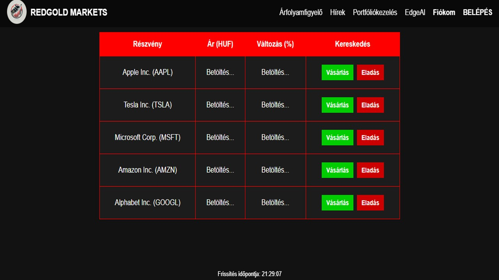
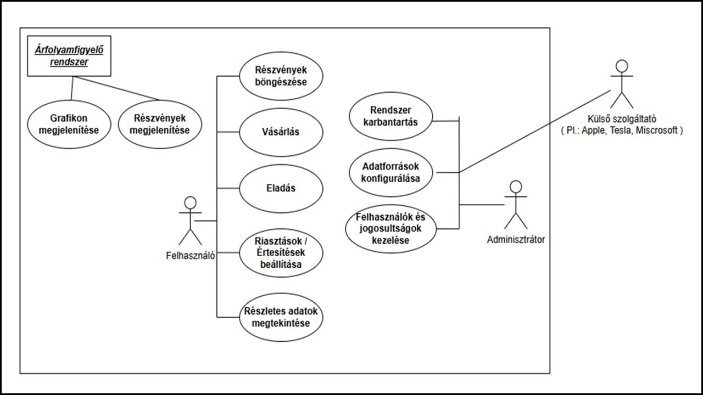
2.3 Hírlevél és Tőzsdei Hírek
A Friss tőzsdei hírek és Hírlevél feliratkozás funkció a webalkalmazás egyik kiemelten fontos része, amely a felhasználókat naprakész piaci információkkal látja el, és támogatja a befektetési döntéseik meghozatalát. A hírek külön oldalon, jól átlátható, időrendi sorrendben jelennek meg, ahol a felhasználók rövid összefoglalókat, címeket és forrásmegjelölést találnak a legfontosabb globális eseményekről. A tartalom külső API-k segítségével kerül integrálásra, így biztosítva a folyamatosan frissülő adatokat, például egy technológiai vállalat új termékbejelentéséről vagy egy fontos gazdasági döntés hatásairól. A hírek gyors áttekinthetőségét szűrési lehetőség is segíti, amely lehetővé teszi, hogy a felhasználók csak az őket érdeklő szektorok vagy földrajzi régiók híreit jelenítsék meg.A hírek mellett a Hírlevél feliratkozás funkció biztosítja, hogy a felhasználók e-mailben is értesüljenek a legfontosabb piaci eseményekről. A feliratkozás egyszerűen, egy rövid űrlap kitöltésével történik, ahol megadható az e-mail-cím, valamint kiválasztható a kívánt értesítési gyakoriság és tartalomtípus. A rendszer a megadott adatok alapján napi, heti vagy havi hírlevelet küld, amely a legfontosabb tőzsdei híreket, portfólióteljesítményt és kereskedési tippeket tartalmazza. A hírlevelek tartalma személyre szabott, figyelembe veszi a felhasználó korábbi tevékenységeit és érdeklődési körét, például a gyakran figyelt részvényeket vagy kedvelt szektorokat. A felhasználók a hírlevelekben található link segítségével bármikor leiratkozhatnak a szolgáltatásról.
A felhasználói élményt tovább növeli a reszponzív kialakítás, amely biztosítja, hogy a hírek bármilyen eszközön – asztali számítógépen, tableten vagy mobiltelefonon – könnyen olvashatók legyenek. A hírek valós idejű frissítését a SignalR technológia biztosítja, így a felhasználóknak nem kell manuálisan frissíteniük az oldalt egy új hír megtekintéséhez. A Hírlevél feliratkozás során a rendszer megerősítő e-mailt küld a felhasználónak, amelyben egy aktiváló link segítségével véglegesíthetik a feliratkozásukat, biztosítva ezzel az adatvédelem és a visszaélés elleni védelmet. A hírlevelek kialakítása vizuálisan illeszkedik a webalkalmazás arculatához, így egységes és letisztult megjelenést biztosít, miközben a felhasználók számára hasznos, naprakész információkat nyújt a pénzügyi piacokról.
Az alábbiakban megtalálható egy felhasználói prototípus és egy use case diagram a funkcióról.
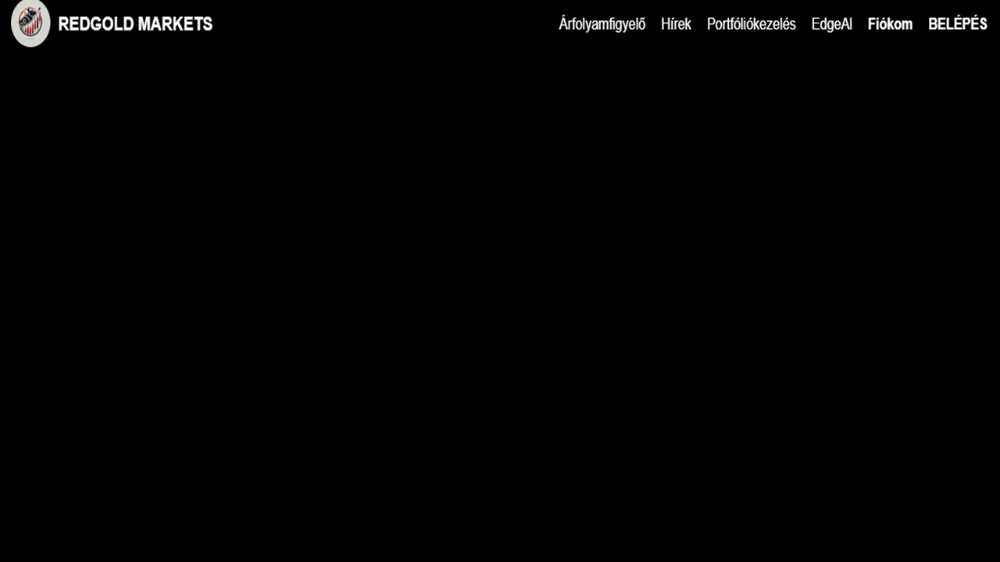
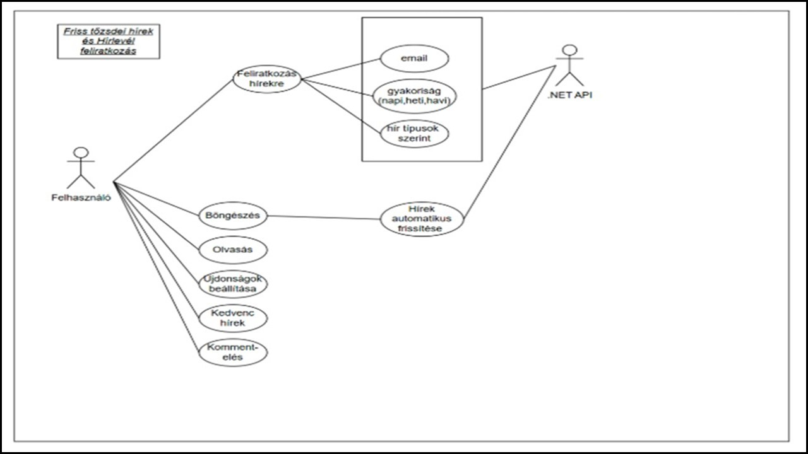
2.4 Portfoliókezelés
A portfóliókezelés funkció a tőzsdei webalkalmazás egyik központi modulja, amely lehetőséget biztosít a felhasználók számára, hogy átlátható módon kövessék és kezeljék szimulált befektetéseiket. A funkció két fő elemből épül fel: egy dinamikusan frissülő kördiagramból és egy részletes befektetési jegylistából. A kördiagram vizuálisan jeleníti meg a portfólió aktuális összetételét, színes szegmensekkel mutatva az egyes eszközök arányát, például a Tesla, Microsoft vagy Alphabet részvények eloszlását. A befektetési jegyek listája részletes információkat tartalmaz minden eszközről, például a részvény nevét, aktuális árfolyamát, mennyiségét és összértékét, így a felhasználók könnyedén áttekinthetik befektetéseiket, és gyorsan végrehajthatnak módosításokat, például új részvények vásárlását vagy meglévő pozíciók eladását.A rendszer továbbfejlesztése során számos új, hasznos funkció kerül beépítésre, amelyek még hatékonyabbá és intelligensebbé teszik a portfóliókezelést. Az egyik ilyen fejlesztés az automatikus portfóliókiegyensúlyozó modul, amely figyeli a portfólió összetételét, és segít a felhasználónak fenntartani az előre beállított eszközarányokat, például 30% részvény, 40% kötvény és 30% készpénz eloszlást. Amennyiben a piac változásai miatt az eszközök aránya eltér a kívánt célaránytól, a rendszer intelligens javaslatokat tesz a szükséges korrekciókra, például részvények eladására vagy új vásárlásokra, miközben figyelembe veszi a tranzakciós költségeket is. A rendszer a manuális beavatkozás lehetőségét is biztosítja, így a felhasználók maguk dönthetnek a rendszer által javasolt lépések végrehajtásáról.
További fejlesztésként a portfóliókezelő modul tartalmazza a tranzakciós naplót, amely részletesen dokumentálja az összes végrehajtott vásárlást és eladást, megkönnyítve ezzel a befektetések visszakövetését és elemzését. A naplóban a felhasználók időbélyeggel ellátva láthatják a tranzakciók részleteit, például a kereskedett eszközök nevét, mennyiségét, árfolyamát és a kapcsolódó költségeket. A rendszer emellett biztosítja a tranzakciók exportálásának lehetőségét is, például CSV vagy JSON formátumban, amely további elemzésekhez vagy archiváláshoz használható. A portfóliókezelő egy értesítési modullal is bővül, amely személyre szabható figyelmeztetéseket küld a felhasználóknak fontos piaci eseményekről, árfolyamváltozásokról vagy a portfólió értékének jelentős elmozdulásáról. Ezen kívül egy kockázatelemző modul is segíti a felhasználókat abban, hogy átlássák befektetéseik kockázati szintjét, például volatilitás, Value at Risk vagy más kockázati mutatók segítségével, és célzott ajánlásokat kapjanak portfóliójuk biztonságosabbá tételéhez. A funkciók összességében egy komplex, mégis felhasználóbarát felületet biztosítanak, amely támogatja a tudatos befektetési döntéshozatalt és a portfólió hatékony menedzselését.
Az alábbiakban megtalálható egy felhasználói prototípus és egy use case diagram a funkcióról.
.JPG)
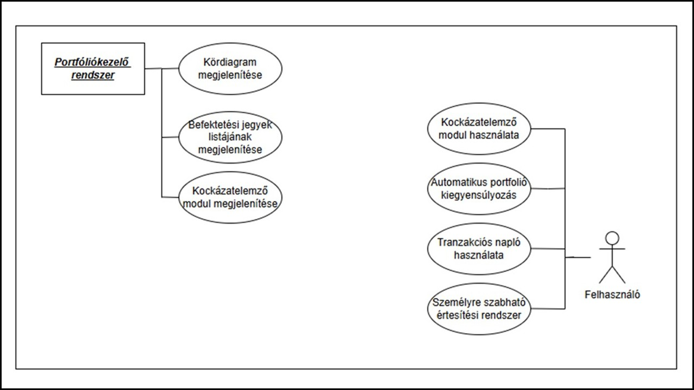
2.4.1 Befektetési szimulátor
A REDGOLD MARKETS webalkalmazásban a Szimulátor modul lehetőséget biztosít a felhasználóknak arra, hogy kockázatmentesen kipróbálják befektetési stratégiáikat egy virtuális környezetben. A szimulátor eléréséhez a felhasználónak a portfóliókezelő oldalon található „Befektetési szimulátor indítása” gombot kell megnyomnia.A gomb megnyomását követően a rendszer automatikusan átáll a szimulátor felületére, ahol a felhasználó egy különálló, tesztelésre kialakított befektetési környezetben folytathatja a portfólió összeállítását és kezelését. A szimulátor működése megegyezik a valós portfóliókezelés folyamatával, azonban itt a befektetések kizárólag virtuális pénzzel történnek, így a felhasználót semmilyen pénzügyi kockázat nem éri. A modul lehetőséget biztosít tetszőleges számú eszköz (például részvény, kötvény) hozzáadására, azok mennyiségének megadására és módosítására. A rendszer vizuálisan is támogatja a portfólió elemzését: a szimulátor felületén egy dinamikusan frissülő narancssárga kördiagram jeleníti meg az eszközök eloszlását, amely automatikusan frissül minden módosítás után.
A szimulátor célja, hogy a felhasználók biztonságos környezetben gyakorolják a befektetéseik kezelését, és fejlesszék pénzügyi döntéshozatali képességeiket. A jövőbeni fejlesztések során a szimulátor kiegészül egy automatikus portfólió-kiegyensúlyozás funkcióval is. Ennek segítségével a felhasználó megadhatja a kívánt eszközarányokat (például 40% részvény, 30% kötvény, 30% készpénz), és a rendszer folyamatosan figyeli, hogy a portfólió megfelel-e ezeknek a beállításoknak. Ha eltérés tapasztalható, a szimulátor javaslatot tesz a módosításokra, figyelembe véve a piaci árfolyamokat és a tranzakciós költségeket.
Az alábbiakban megtalálható egy felhasználói prototípus és egy use case diagram a funkcióról.
.JPG)
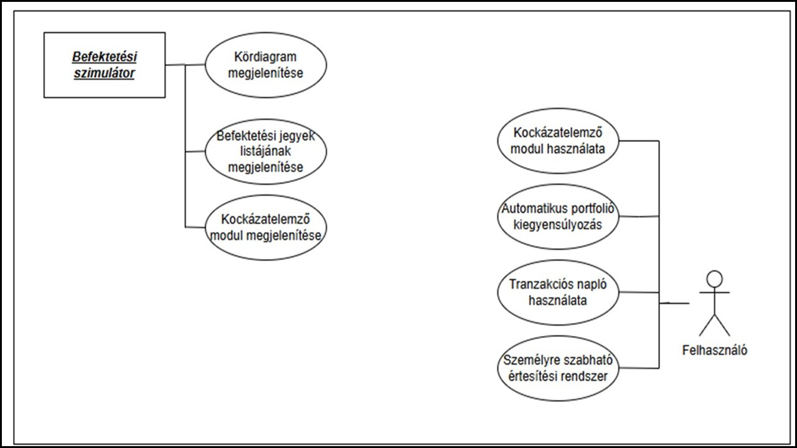
2.5 EdgeAl
A tőzsdei webalkalmazás fejlesztési ütemtervének egyik legfontosabb része az AI-alapú Interaktív Oktatási Modul és Elemző Eszköz bevezetése, amelynek célja, hogy a felhasználók számára közérthető módon bemutassa a piaci folyamatokat és a rendszer működését. A modul személyre szabott tananyagokat biztosít, amelyeket a mesterséges intelligencia a felhasználó interakciói és tanulási szokásai alapján alakít ki. Az oktatási tartalmak között interaktív videók, esettanulmányok és lépésről-lépésre bemutatott útmutatók is megtalálhatók, amelyek a tőzsdei alapfogalmaktól a bonyolultabb prediktív elemzésekig terjednek. Az MI folyamatosan figyeli a felhasználó tanulási folyamatát, és az igényeinek megfelelően frissíti és optimalizálja a bemutatott tartalmakat, ezáltal növelve a tanulás hatékonyságát és élményét.A rendszer második kiemelt eleme egy Valós Idejű Értesítési Rendszer, amely a globális piac eseményeit és piaci ingadozásokat figyeli, majd a legfontosabb információkat azonnal továbbítja a felhasználónak. Az MI folyamatosan elemzi a hírszolgáltatásokat, piaci adatokat és egyéb releváns információforrásokat, hogy felismerje a befektetésekre hatást gyakorló kritikus változásokat. Az értesítések push üzenetek vagy e-mail formájában érkeznek, a felhasználó által beállított paraméterek alapján. A rendszer képes arra is, hogy a felhasználók egyedi kockázati profiljához és befektetési preferenciáihoz igazítsa az értesítéseket, így biztosítva, hogy mindenki csak a számára releváns információkat kapja meg valós időben.
A fejlesztési koncepció további fontos eleme a Szimulált Portfólió Analitikai és Diverzifikációs Asszisztens, amely az MI segítségével részletes statisztikákat és elemzéseket készít a felhasználók befektetéseiről. A rendszer grafikonok és korrelációs elemzések segítségével mutatja be a portfólió teljesítményét és kockázati szintjét, miközben segít a túlzott koncentrációk felismerésében és a diverzifikáció javításában. A Visszajelzés Alapú Adaptív Tanulási Mechanizmus lehetővé teszi a rendszer folyamatos fejlődését, amely során a felhasználók visszajelzései alapján az MI finomítja az ajánlási algoritmusokat. A háttérrendszer több rétegű architektúrával rendelkezik: az adatgyűjtési réteg külső API-kból származó valós idejű piaci adatokat kezel, az adat-előkészítés a .NET API segítségével történik, míg a modellépítési réteg gépi tanulási algoritmusok segítségével generálja a személyre szabott ajánlásokat. A rendszer folyamatosan tanul a felhasználói viselkedésből és a piaci környezet változásaiból, így biztosítva a dinamikus, rugalmas és intelligens működést.
Az alábbiakban megtalálható egy felhasználói prototípus és egy use case diagram a funkcióról.
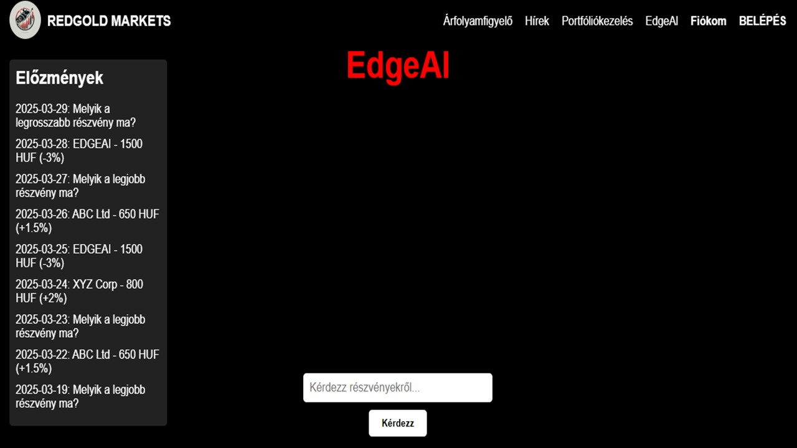
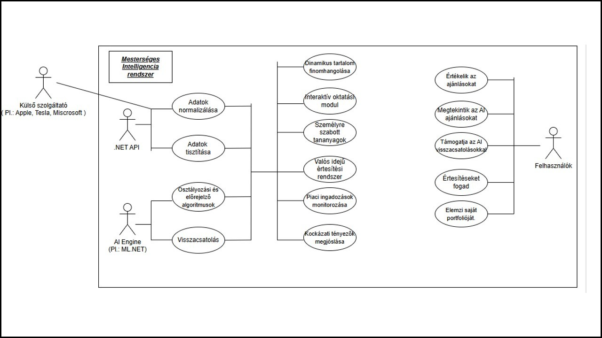
2.6 Felhasználói fiók
A Fiókkezelés funkció a tőzsdei webalkalmazás egyik legfontosabb alapszolgáltatása, amely biztosítja a felhasználók számára, hogy könnyedén kezeljék személyes adataikat és fiókbeállításaikat. A felület egyszerű és átlátható kialakításának köszönhetően a felhasználók gyorsan áttekinthetik alapvető adataikat, mint például a nevüket és az e-mail-címüket, amelyek megjelennek a "Rólam" szekcióban. A rendszer lehetőséget biztosít az adatok ellenőrzésére és módosítására, különösen akkor, ha például valaki e-mail-címet változtatott vagy más nyelvi beállításokat szeretne alkalmazni. A felhasználói adatok módosítása egy Szerkesztés gomb segítségével történik, és a mentett változtatásokat a rendszer a háttérben a Microsoft SQL Server adatbázisban rögzíti a .NET API közreműködésével.A Fiókkezelés funkció részeként további alapvető műveletek is elérhetők, mint például a jelszó megváltoztatása vagy a fiók végleges törlése. A "Jelszó megváltoztatása" funkció lehetőséget biztosít arra, hogy a felhasználók erősebb, biztonságosabb jelszót állítsanak be, míg a "Fiók törlése" opció a teljes fiók és a hozzá tartozó adatok végleges eltávolítását teszi l ehetővé. A rendszer külön megerősítő ablakban figyelmezteti a felhasználót, hogy a fiók törlése végleges, és minden szimulált tranzakció, portfólió és korábbi adatművelet elveszik. A biztonság érdekében a .NET API JWT (JSON Web Token) alapú hitelesítést alkalmaz, amely garantálja, hogy csak a jogosult felhasználó férhet hozzá saját fiókjához. A jelszóváltoztatás során a rendszer szigorú biztonsági szabályokat alkalmaz, például legalább 8 karakter hosszúságú jelszót, kis- és nagybetűk, valamint számok kombinációját írja elő.
A rendszer további fejlesztései során a Fiókkezelés funkció még több kényelmi és biztonsági lehetőséggel bővülhet. A felhasználók számára elérhetővé válhat a kétfaktoros hitelesítés (2FA), amely extra védelmi réteget jelenthet a fiók biztonsága érdekében, például egy SMS-ben vagy e-mailben küldött kóddal. Emellett a felhasználók közvetlenül a Fiókkezelés felületéről beállíthatják majd az értesítéseik testreszabását, például azt, hogy milyen piaci eseményekről szeretnének e-mailes vagy push-értesítést kapni. A rendszer a j övőben támogatni fogja a közösségi média alapú bejelentkezést is, például Google- vagy Facebook-fiókkal történő belépést, amely gyorsabb hozzáférést biztosít az alkalmazáshoz. A felhasználói élményt tovább javítja a reszponzív dizájn, amely lehetővé teszi a Fiókkezelés funkció használatát bármilyen eszközön, legyen szó asztali gépről, tabletről vagy mobiltelefonról. A rendszer a biztonságos működés érdekében naplózza a fontos fiókműveleteket is, amelyeket a felhasználók a "Tevékenységnapló" szekcióban tekinthetnek meg, így bármikor ellenőrizhetik a végrehajtott változtatásokat vagy műveleteket.
Az alábbiakban megtalálható egy felhasználói prototípus és egy use case diagram a funkcióról.
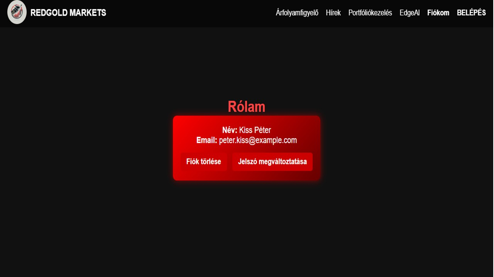

2.7 ÁSZF, Adatvédelmi Tájékoztató, Rólunk felületek
Az Általános Szerződési Feltételek (ÁSZF), az Adatvédelmi Tájékoztató és a Rólunk oldal a tőzsdei webalkalmazás jogi és információs felületeinek alapvető elemei, amelyek a felhasználók számára átláthatóan és könnyen elérhetően jelennek meg. Ezek a felületek a láblécből érhetők el minden oldalon, így biztosítva a gyors hozzáférést és a felhasználói bizalom erősítését. Az ÁSZF oldal tartalmazza a rendszer működésének részletes szabályait, a szolgáltatás igénybevételének feltételeit, a felhasználók jogait és kötelezettségeit, valamint a szerződéses feltételek részletezését. Az Adatvédelmi Tájékoztató részletesen bemutatja, hogyan kezeli az alkalmazás a felhasználók személyes adatait, milyen adatokat gyűjt, hogyan tárolja azokat, és milyen célból történik az adatkezelés.Mindkét dokumentum könnyen olvasható, jól strukturált formában jelenik meg, fejezetekre és alpontokra tagolva, hogy a felhasználók egyszerűen megtalálják a számukra fontos információkat. A rendszer keresőfunkciót is biztosíthat ezekben a felületekben, hogy a látogatók kulcsszavak alapján gyorsan navigálhassanak a dokumentumokban. Az ÁSZF és az Adatvédelmi Tájékoztató a jövőben verziókövetéssel bővülhet, amely megjeleníti a dokumentumok frissítésének dátumát és verziószámát is. A rendszer automatikus értesítést küldhet a felhasználóknak, ha ezek a dokumentumok módosulnak, például e-mailben vagy belső üzenetben.
A Rólunk oldal célja, hogy bemutassa a platformot fejlesztő csapatot, a cég küldetését, értékeit és célkitűzéseit. Ezen a felületen helyezhetők el a csapat bemutatkozó szövegei, fotói, valamint a cég elérhetőségi adatai, például e-mail-cím és közösségi média linkek. A Rólunk oldal segít személyesebbé és bizalomgerjesztőbbé tenni az alkalmazást, mivel a felhasználók képet kaphatnak a fejlesztők szakmai hátteréről és céljairól. A felület a jövőben tartalmazhatja a platform történetét, mérföldköveit, valamint partnerek és támogató szervezetek logóit is. Az oldalak reszponzív kialakításúak, így mobilon és asztali gépen egyaránt jól olvashatók. A tartalom egyszerűen frissíthető adminisztrátori felületen keresztül, így a fejlesztők könnyen aktualizálhatják az adatokat. Az ÁSZF, az Adatvédelmi Tájékoztató és a Rólunk oldalak egységes megjelenést és könnyű kezelhetőséget biztosítanak, ezáltal hozzájárulnak a rendszer átláthatóságához és a felhasználói bizalom megteremtéséhez.
2.8 Súgórendszer
Az alkalmazás súgó modulja kulcsfontosságú támogatási rendszerként szolgál, amely segíti a felhasználókat abban, hogy gyorsan és hatékonyan találjanak megoldást bármilyen használati vagy technikai kérdésükre. A modul célja, hogy könnyen kereshető, naprakész tudásbázist nyújtson, ezáltal elősegítve a gördülékeny rendszerhasználatot és a felhasználói elégedettséget. A súgó elsődleges része a Gyakran Ismételt Kérdések (GYIK) és a Részletes Dokumentáció, amely részletes válaszokat tartalmaz a leggyakrabban előforduló problémákra, valamint lépésről lépésre bemutatott megoldási javaslatokat. A fejlesztők számára biztosítani kell az adminisztrátori tartalomkezelés lehetőségét, a felhasználóknak pedig egy kulcsszavas keresőfelületet, amely lehetővé teszi a gyors információkeresést mobilon és asztali nézetben egyaránt.A tudásbázis mellett a Részletes Felhasználói Kézikönyv biztosítja az összes funkció teljes körű leírását példákkal, illusztrációkkal és képernyőképekkel, amely segíti az új felhasználókat a platform megismerésében. A kézikönyv interaktív formában érhető el, kereshető tartalommal és könnyen navigálható menüszerkezettel. A rendszer támogatja az offline elérést is, így a felhasználók akkor is hozzáférhetnek az útmutatókhoz, ha épp nem csatlakoznak az internetre. A tartalmak dinamikusan betöltődnek, és a fejlesztők számára elérhetővé válik egy belső tartalomkezelő rendszer, amellyel a frissítések gyorsan elvégezhetők. Ezzel biztosítható, hogy a dokumentáció mindig naprakész maradjon, reagálva a rendszer új funkcióira és változásaira.
A súgó modul további eleme a Hibabejelentési és Visszajelző rendszer, amely lehetővé teszi a felhasználók számára, hogy egyszerűen jelentsenek be technikai problémákat vagy küldjenek fejlesztési javaslatokat. A bejelentések egy űrlapon keresztül történnek, amely azonnali validálást és kategorizálást végez, a háttérben pedig REST API-kon keresztül kerülnek rögzítésre az adatbázisban. A felhasználók visszajelzést kapnak bejelentésük státuszáról, így átláthatóvá válik számukra az ügykezelés folyamata. Emellett a Live Chat funkció valós idejű kommunikációt biztosít az ügyfélszolgálattal, amely WebSocket technológiával működik, és lehetőséget ad a chatelőzmények megtekintésére is. A rendszer automatikus üzeneteket is küldhet, például ha ügyfélszolgálati munkatárs nem elérhető, ezzel is javítva a felhasználói élményt és a bizalomérzetet.
Az alábbiakban megtalálható egy felhasználói prototípus és egy use case diagram a funkcióról.
.JPG)
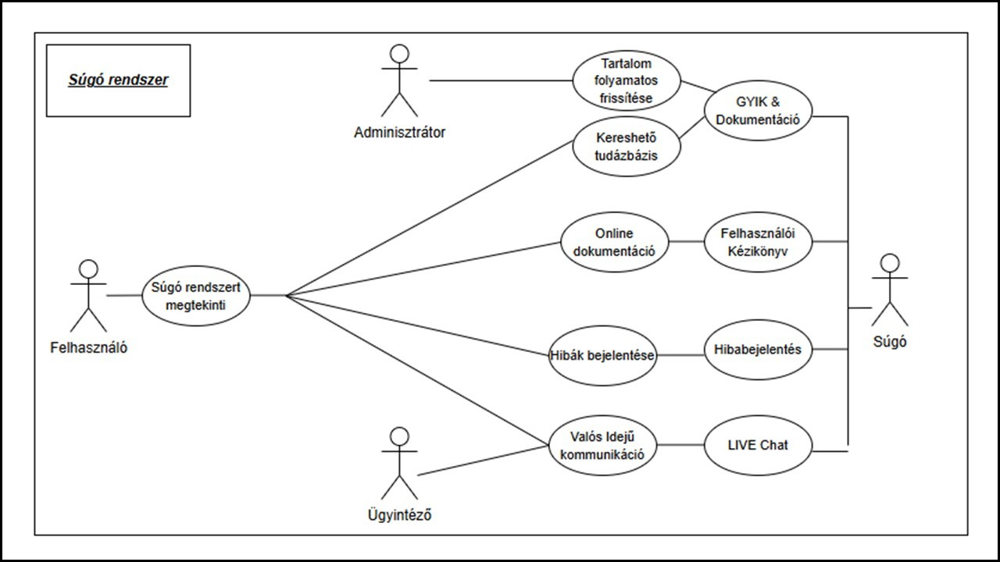
2.9 Közösségi Fórum
A Közösségi Fórum a tőzsdei webalkalmazás közösségi alapú funkciója, amely lehetőséget biztosít a felhasználóknak arra, hogy kérdéseket tegyenek fel, megosszák tapasztalataikat, és eszmecserét folytassanak a tőzsdei kereskedésről. A fórum célja egy tanulást segítő, támogató közösség létrehozása, különösen a kezdő befektetők számára, akik mások tapasztalataiból meríthetnek ötleteket. A fórum a navigációs menüből közvetlenül elérhető, és kialakítása illeszkedik a platform vizuális megjelenéséhez. A bejegyzések és témák kategóriák szerint csoportosíthatók, például „Kezdőknek”, „Stratégiák”, „Részvényelemzések” vagy „Piaci hírek”, így a felhasználók könnyen eligazodhatnak a tartalmak között. Minden felhasználó új témát indíthat, hozzászólhat mások bejegyzéseihez, vagy „Tetszik” gombbal értékelheti azokat, így emelve ki a hasznos hozzászólásokat.A fórum reszponzív dizájnnal készült, így minden eszközön – asztali gépen, tableten vagy mobilon – könnyen használható, és a bejegyzések valós időben frissülnek a SignalR technológiának köszönhetően. A hozzászólások alatt megjelenik a szerző neve, az időbélyeg, valamint a válaszok száma, így a felhasználók gyorsan azonosíthatják a legaktívabb témákat. A jövőbeli fejlesztések részeként lehetőség nyílik majd képek, grafikonok és szimulált portfóliók csatolására is, ami tovább segíti a szakmai eszmecserét és elemzéseket. A fórum moderált környezetben működik: automatikus szűrők és emberi moderátorok gondoskodnak arról, hogy ne jelenjenek meg nem megfelelő, sértő vagy irreleváns tartalmak. A felhasználók „Jelentés” gombbal jelezhetik a problémás hozzászólásokat, a rendszer pedig átláthatóan kezeli az eltávolításokat, visszajelzést küldve a bejegyzés szerzőjének.
A felhasználói élmény fokozása érdekében a fórum több közösségi és tanulást támogató funkcióval is rendelkezik. Kiemelt tartalmak szekcióban a moderátorok által kiválasztott, hasznos bejegyzések jelennek meg, például útmutatók vagy elemzések, amelyek kezdőknek és haladóknak is értékesek lehetnek. A fórum egy pontozási és ranglista rendszert is tartalmaz, amely jutalmazza az aktív és értékes hozzászólásokat, így ösztönözve a felhasználók részvételét. A jövőben várható a privát üzenetküldés, az élő csevegési események, valamint egy MI-alapú ajánlórendszer bevezetése, amely segít személyre szabottan új témákat javasolni a felhasználó érdeklődése alapján. Mindezek a funkciók egy olyan dinamikus, interaktív és tanulásorientált közösségi felületet hoznak létre, amely hatékonyan kiegészíti a webalkalmazás pénzügyi és kereskedési funkcióit.
Az alábbiakban megtalálható egy felhasználói prototípus és egy use case diagram a funkcióról.
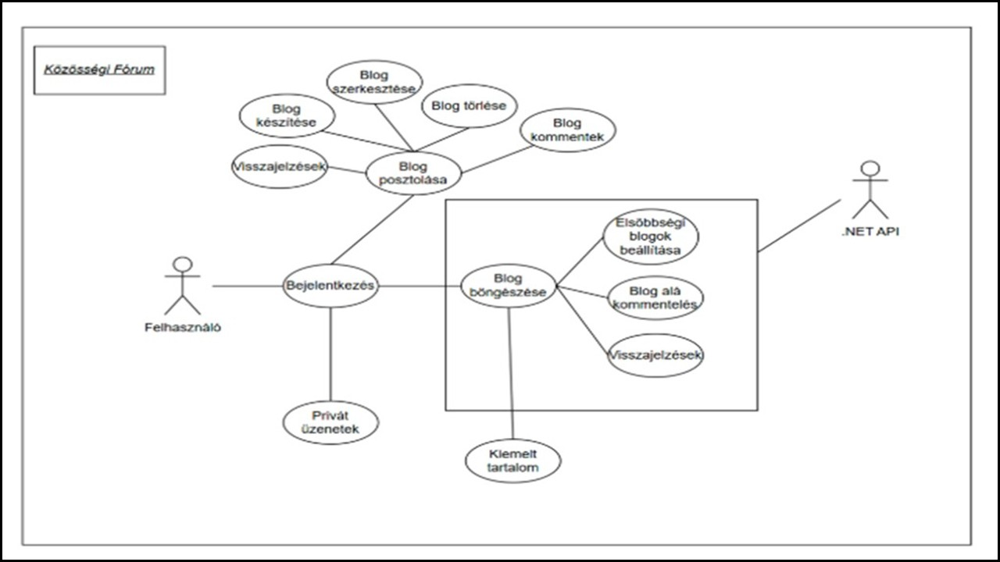